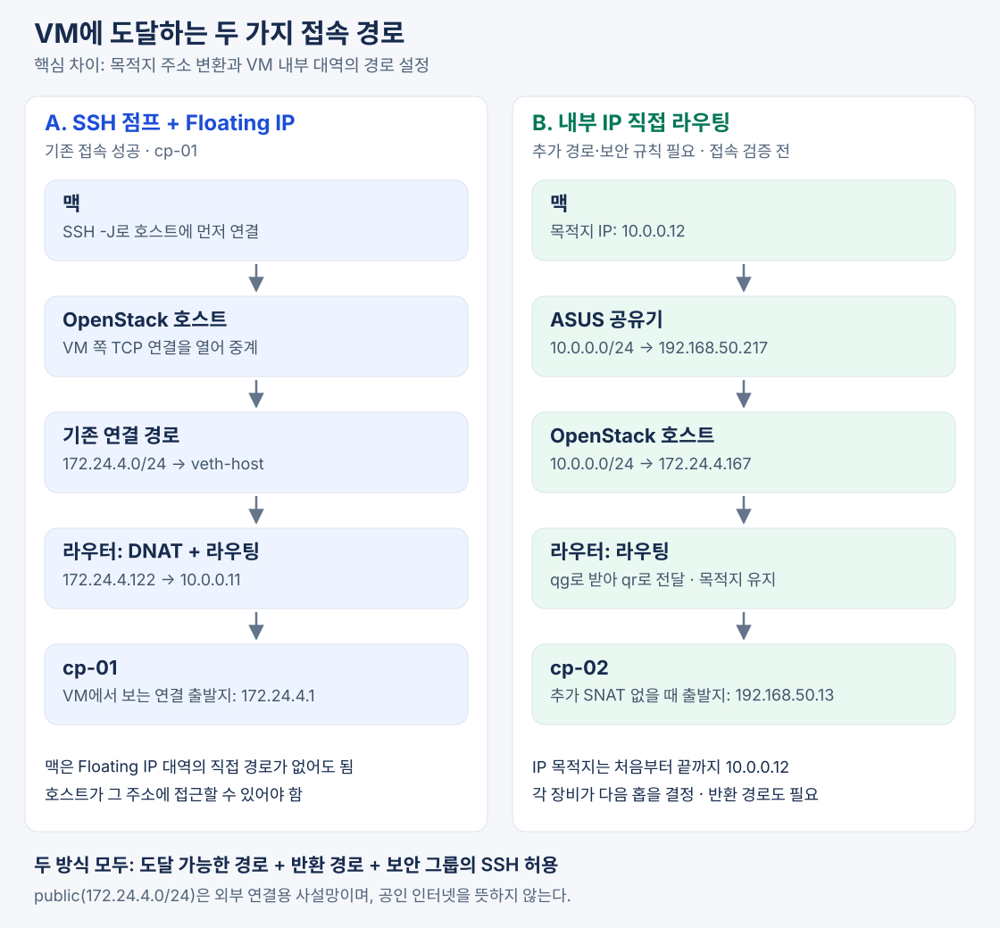
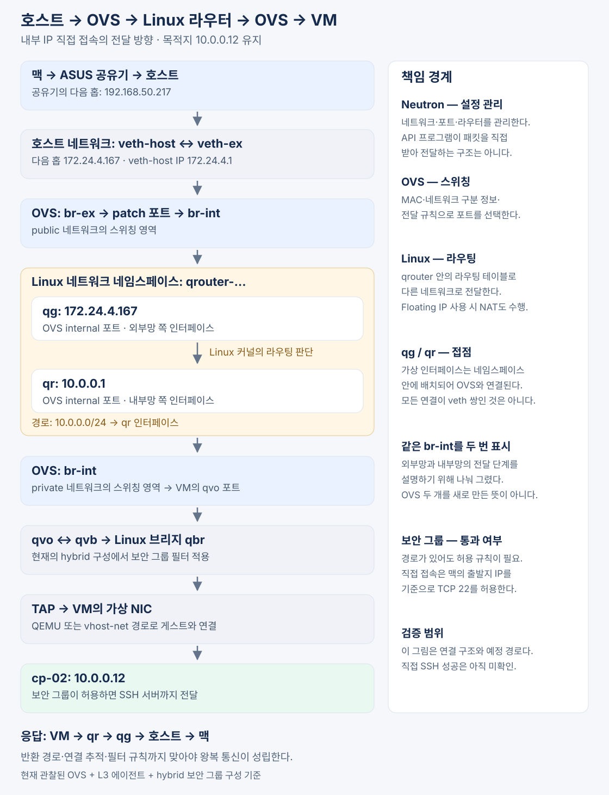

OpenStack VM에 접속할 때 반드시 Floating IP가 필요한 것은 아니다. VM의 내부 IP까지 도달하는 경로와 돌아오는 경로가 있고, 보안 규칙이 허용한다면 내부 IP로 직접 접속할 수 있다.
Floating IP를 먼저 사용했던 이유는 기존 환경에 그 주소로 접근할 수 있는 경로가 준비돼 있었기 때문이다. 내부 IP로 직접 접속하려면 공유기와 OpenStack 호스트에 추가 경로를 설정해야 한다.
이 차이를 이해하려면 OpenStack의 네트워크·라우터라는 논리적 자원과, 이를 실제로 구현하는 OVS·Linux 네임스페이스·가상 인터페이스를 구분해야 한다.
1. 예시 환경에는 세 개의 네트워크가 있다
현재 환경의 주요 주소는 다음과 같다.
| 구분 | 주소 | 역할 |
|---|---|---|
| 집 LAN | 192.168.50.0/24 |
맥·ASUS 공유기·OpenStack 호스트가 연결된 네트워크 |
OpenStack public |
172.24.4.0/24 |
호스트와 Neutron 라우터의 외부 쪽을 연결하는 네트워크 |
OpenStack private |
10.0.0.0/24 |
VM들이 연결된 내부 네트워크 |
각 장비와 인터페이스에는 다음 주소가 할당돼 있다.
| 대상 | 주소 |
|---|---|
| 맥 | 192.168.50.13 |
| ASUS 공유기 | 192.168.50.1 |
| OpenStack 호스트의 Wi-Fi | 192.168.50.217 |
호스트의 veth-host |
172.24.4.1 |
| Neutron 라우터의 외부 인터페이스 | 172.24.4.167 |
| Neutron 라우터의 내부 인터페이스 | 10.0.0.1 |
cp-01의 내부 IP |
10.0.0.11 |
cp-01의 Floating IP |
172.24.4.122 |
cp-02의 내부 IP |
10.0.0.12 |
public이라는 이름은 공인 IP나 인터넷을 뜻하지 않는다. 이 환경의 public은 VM 내부망을 기준으로 바깥쪽에 있는 네트워크이며, 172.24.4.x 역시 사설 IP다.
따라서 Floating IP를 할당했다고 인터넷 어디에서나 바로 접속할 수 있는 것은 아니다. 그 Floating IP가 속한 네트워크까지 도달하는 경로가 필요하다.
2. Floating IP로 먼저 접속할 수 있었던 이유
처음에는 다음과 같이 OpenStack 호스트를 경유해 VM에 접속했다.
ssh -J dev@192.168.50.217 \
-i ~/.ssh/openstack-k8s-lab \
ubuntu@172.24.4.122
-J는 SSH의 점프 호스트 기능이다. 맥이 먼저 호스트에 SSH로 연결하고, 호스트가 VM의 Floating IP로 TCP 연결을 열어 통신을 중계한다.
맥
→ OpenStack 호스트에 SSH 연결
→ 호스트에서 172.24.4.122:22로 연결
→ VM의 SSH 서버
이 방식에서는 맥이 172.24.4.0/24로 가는 직접 경로를 가지고 있을 필요가 없다. 점프 호스트가 그 주소에 접근할 수 있으면 된다.
호스트에는 이미 다음 경로가 있었다.
172.24.4.0/24 dev veth-host proto kernel scope link src 172.24.4.1
뜻은 다음과 같다.
172.24.4.0/24는veth-host에 직접 연결된 네트워크다.
veth-host에 172.24.4.1/24를 할당하면서 생성된 연결 경로다. 따라서 호스트는 같은 대역의 Floating IP인 172.24.4.122로 패킷을 보낼 수 있었다.
Floating IP가 라우팅을 필요 없게 만든 것이 아니라, 이미 존재하는 경로를 사용한 것이다.
3. Floating IP는 VM의 내부 IP와 연결되는 별도의 주소다
VM은 private 네트워크의 포트를 통해 10.0.0.11이라는 내부 IP를 가지고 있다. Floating IP는 별도로 할당한 뒤 이 포트의 내부 IP와 연결한다.
Floating IP VM의 내부 IP
172.24.4.122 ↔ 10.0.0.11
현재와 같은 Neutron L3 에이전트 구성에서는 라우터가 Floating IP로 들어온 패킷의 목적지를 VM의 내부 IP로 변환한다. 이를 DNAT, 목적지 주소 변환이라고 한다.
호스트가 보낸 패킷
목적지: 172.24.4.122
│
▼
라우터에서 DNAT
목적지: 10.0.0.11
│
▼
VM으로 전달
응답은 해당 연결의 NAT 상태에 따라 외부에서 Floating IP와 통신하는 것으로 보이도록 처리된다. 이러한 Floating IP 경로는 OpenStack의 OVS 기반 네트워크 문서에서도 설명한다. OpenStack OVS 네트워크 구조
이 방식은 외부에 VM 내부 대역 전체의 경로를 알리는 대신, 외부 네트워크의 주소를 필요한 VM에 연결해 접근하게 할 수 있다는 의미가 있다.
4. 내부 IP로 접속하려면 각 구간이 다음 목적지를 알아야 한다
맥에서 다음처럼 직접 접속하는 것도 가능하다.
ssh -i ~/.ssh/openstack-k8s-lab ubuntu@10.0.0.12
하지만 이때는 SSH 점프 호스트가 연결을 대신 열어주지 않는다. 맥이 보낸 목적지 10.0.0.12의 패킷 자체가 VM까지 전달돼야 한다.
필요한 경로는 다음과 같다.
맥
→ ASUS 공유기
→ OpenStack 호스트
→ Neutron 라우터
→ VM
각 장비는 자기 라우팅 테이블을 보고 다음 전달 대상을 결정한다.
| 경로를 판단하는 곳 | 필요한 판단 |
|---|---|
| 맥 | 더 구체적인 경로가 없으면 기본 게이트웨이인 ASUS 공유기로 전달 |
| ASUS 공유기 | 10.0.0.0/24는 192.168.50.217로 전달 |
| OpenStack 호스트 | 10.0.0.0/24는 172.24.4.167로 전달 |
| Neutron 라우터 | 10.0.0.0/24는 내부 인터페이스 쪽에 직접 연결돼 있음 |
ASUS 공유기에만 경로를 추가하면 충분하지 않다. 호스트에도 VM 대역의 경로가 없으면 호스트는 패킷을 기본 게이트웨이인 ASUS 공유기로 다시 보낼 수 있다.
목적지 IP와 다음 홉은 다르다
호스트에 추가하려는 경로는 다음과 같다.
sudo ip route add 10.0.0.0/24 via 172.24.4.167 dev veth-host
각 부분의 의미는 다음과 같다.
| 부분 | 의미 |
|---|---|
10.0.0.0/24 |
이 경로를 적용할 목적지 대역 |
via 172.24.4.167 |
패킷을 다음으로 넘길 라우터 주소 |
dev veth-host |
패킷을 내보낼 인터페이스 |
이 명령은 목적지 IP를 172.24.4.167로 바꾸라는 뜻이 아니다.
목적지는
10.0.0.12로 유지하면서, 그곳으로 전달해 줄 다음 라우터에 패킷을 넘긴다.
호스트는 다음 홉의 MAC 주소를 알아내 해당 장치로 이더넷 프레임을 보낸다. 라우터는 프레임 안의 IP 목적지를 보고 다시 다음 전달 경로를 판단한다.
이 명령으로 추가한 경로는 임시 설정이다. 동작을 검증한 뒤 재부팅 후에도 유지되도록 별도 설정해야 한다.

5. Neutron 라우터는 논리적 자원이고, Linux가 실제 라우팅을 수행한다
OpenStack에서 생성하는 라우터는 Neutron이 관리하는 자원이다. 이 환경에서는 해당 라우터가 다음 Linux 네트워크 네임스페이스로 구현돼 있다.
qrouter-372fc3cd-9ae2-45e6-af71-56eb5b9c72c2
뒤의 UUID는 OpenStack 라우터의 식별자다.
네트워크 네임스페이스는 인터페이스·IP 주소·라우팅 테이블·방화벽 규칙 등을 분리하는 Linux 기능이다. 별도의 VM이나 별도의 커널이 생기는 것은 아니다.
Neutron의 L3 에이전트는 이 공간에 필요한 설정을 만들고, 실제 패킷의 라우팅과 NAT는 호스트의 Linux 커널이 해당 네임스페이스의 설정에 따라 처리한다. Neutron L3와 네트워크 네임스페이스
따라서 “패킷을 Neutron 라우터로 보낸다”는 표현은 다음 의미다.
Neutron이 구성해 둔 Linux 라우터 네임스페이스의 인터페이스로 패킷을 전달한다.
패킷이 Neutron API 프로그램에 들어가서 처리된다는 뜻은 아니다. 또한 모든 OpenStack 배포가 이 방식인 것은 아니며, 이 설명은 현재의 OVS·L3 에이전트 구성에 해당한다.
6. qr과 qg는 라우터가 양쪽 네트워크에 연결되는 인터페이스다
다음 명령은 라우터 네임스페이스 안의 인터페이스에 할당된 IPv4 주소를 조회한다.
sudo ip netns exec \
qrouter-372fc3cd-9ae2-45e6-af71-56eb5b9c72c2 \
ip -br -4 addr
명령을 나누면 다음과 같다.
| 부분 | 의미 |
|---|---|
sudo |
관리자 권한으로 실행 |
ip netns exec 이름 |
지정한 네트워크 네임스페이스 안에서 뒤의 명령 실행 |
ip -br -4 addr |
인터페이스의 IPv4 주소를 간략히 출력 |
-br는 간략한 출력, -4는 IPv4만 표시한다는 뜻이다. 바깥쪽 ip는 실행할 네임스페이스를 선택하고, 안쪽 ip는 주소를 조회한다. Linux ip netns 설명
관찰된 출력은 다음과 같다.
lo UNKNOWN 127.0.0.1/8
qr-fbe8a297-90 UNKNOWN 10.0.0.1/24
qg-cfc59153-b0 UNKNOWN 172.24.4.167/24 172.24.4.130/32 172.24.4.122/32
이것은 네트워크 목록이 아니라 라우터의 인터페이스와 주소 목록이다.
| 인터페이스·주소 | 의미 |
|---|---|
lo |
라우터 네임스페이스의 루프백 |
qr-…, 10.0.0.1/24 |
private 네트워크에 연결되는 내부 인터페이스 |
qg-…, 172.24.4.167/24 |
public 네트워크에 연결되는 외부 인터페이스 |
172.24.4.130/32, 172.24.4.122/32 |
외부 인터페이스에 추가된 Floating IP |
10.0.0.1은 private 네트워크 자체가 아니라 그 네트워크 안에서 라우터가 사용하는 주소다. VM은 다른 네트워크로 나갈 때 이 주소를 기본 게이트웨이로 사용한다.
UNKNOWN은 표시된 링크 상태이며, 이 값만으로 인터페이스가 고장 났거나 통신할 수 없다고 판단하지 않는다.
라우팅 규칙을 보려면 주소 조회인 addr 대신 route를 사용한다.
sudo ip netns exec \
qrouter-372fc3cd-9ae2-45e6-af71-56eb5b9c72c2 \
ip -4 route
주소 조회는 “인터페이스에 무슨 IP가 붙어 있는가”, 경로 조회는 “목적지에 따라 어디로 보낼 것인가”를 보여준다.
7. OVS는 인터페이스들을 연결하는 소프트웨어 스위치다
Open vSwitch, 즉 OVS는 여러 인터페이스를 포트에 연결하고 프레임을 적절한 포트로 전달한다.
OVS가 모든 가상 랜카드를 만드는 것은 아니다. 직접 제공하는 internal 포트뿐 아니라 다른 도구가 만든 veth·TAP, 물리 인터페이스도 연결해 사용할 수 있다.
일반적인 스위칭에서는 목적지 MAC 주소, VLAN 같은 네트워크 구분 정보, 설정된 전달 규칙을 바탕으로 포트를 선택한다.
현재 구성의 역할을 나누면 다음과 같다.
| 구성 요소 | 책임 |
|---|---|
| Neutron | 원하는 네트워크·포트·라우터 구조를 관리하고 실제 설정에 반영 |
| OVS | 네트워크별 트래픽을 구분하고 적절한 포트로 전달 |
| 라우터 네임스페이스의 Linux 커널 | 서로 다른 네트워크 사이의 라우팅과 NAT 수행 |
| VM 앞 Linux 브리지와 필터 규칙 | 현재 구성에서 보안 그룹 검사에 사용 |
| TAP | 호스트의 네트워크 처리와 VM의 가상 NIC 사이를 연결 |
따라서 OpenStack의 네트워크는 라우터 안에 넣어두는 경로 목록이 아니다. VM과 라우터 인터페이스 등을 연결하는 가상 스위칭 영역이다.
또한 네트워크 하나마다 OVS 브리지 하나가 반드시 생기는 것도 아니다. 여러 네트워크가 같은 OVS 브리지를 공유하면서 태그와 전달 규칙으로 분리될 수 있다.
같은 서브넷의 VM끼리는 라우터를 거치지 않고 이 스위칭 영역을 통해 통신한다.
8. 호스트에서 VM까지 패킷이 실제로 흐르는 과정
내부 IP 10.0.0.12로 직접 접속할 때의 전달 구조는 다음과 같다.
맥: 192.168.50.13
│ 목적지 IP: 10.0.0.12
▼
ASUS 공유기
│ 10.0.0.0/24 → 192.168.50.217
▼
OpenStack 호스트
│ 10.0.0.0/24 → 172.24.4.167
▼
veth-host ↔ veth-ex
▼
OVS br-ex → br-int의 public 쪽
▼
qg: 172.24.4.167
│
│ 라우터 네임스페이스에서 Linux가 라우팅
│ “10.0.0.12는 내부망 쪽이다”
▼
qr: 10.0.0.1
▼
OVS br-int의 private 쪽
▼
VM 포트의 qvo ↔ qvb
▼
Linux 브리지 qbr / 보안 그룹 검사
▼
TAP → 가상 NIC
▼
VM: 10.0.0.12

veth-host와 veth-ex는 가상 케이블의 양 끝처럼 연결돼 있다. 호스트가 한쪽으로 내보낸 프레임이 다른 쪽을 통해 OVS에 들어간다.
라우터의 qg와 qr는 이 환경에서 OVS internal 포트로 구현된 인터페이스다. 모든 연결 구간이 veth 쌍인 것은 아니다.
패킷이 라우터를 통과한 뒤 다시 OVS에 들어가는 이유는 다른 네트워크로 넘어왔기 때문이다.
- 처음에는 public 쪽에서 라우터의 외부 인터페이스까지 전달한다.
- 라우터가 목적지 IP에 따라 내부 인터페이스를 선택한다.
- 다시 private 쪽 스위칭을 통해 VM 포트까지 전달한다.
TAP 이후의 실제 데이터 처리는 구성에 따라 QEMU 또는 vhost-net 같은 커널 가속 경로가 담당할 수 있다. 모든 패킷을 반드시 QEMU 사용자 공간 프로세스가 직접 복사하는 것은 아니다.
9. 경로가 있어도 보안 그룹이 허용해야 접속된다
라우팅과 보안 그룹은 서로 다른 질문에 답한다.
- 라우팅: 이 패킷을 어디로 보낼 것인가?
- 보안 그룹: 이 패킷을 VM에 들어가게 허용할 것인가?
기존 SSH 점프 호스트 방식에서는 호스트가 VM으로 TCP 연결을 열었다. 그 연결의 출발지로 사용된 172.24.4.1을 보안 그룹에서 허용했다.
반면 추가 SNAT 없이 맥에서 내부 IP로 직접 접속하면 VM에 도달하는 패킷의 출발지는 맥의 192.168.50.13이다. 따라서 기존 규칙만으로는 충분하지 않다.
| 접속 방식 | VM 쪽에서 허용할 출발지 |
|---|---|
| 호스트를 통한 기존 SSH 점프 | 172.24.4.1/32 |
| 맥에서 직접 라우팅 | 192.168.50.13/32 |
직접 접속을 위해 준비한 규칙은 맥의 /32 주소에서 오는 TCP 22번을 허용하는 규칙이다. 맥의 DHCP 주소가 바뀌면 이 규칙도 맞춰야 한다.
응답 경로도 필요하다. 현재 라우터의 기본 경로는 호스트의 172.24.4.1을 향하고, 호스트는 집 LAN에 직접 연결돼 있다. 이 경로와 연결 추적·방화벽 처리가 함께 맞아야 왕복 통신이 성립한다.
10. 두 방식의 차이와 현재 검증 범위
| 항목 | Floating IP 접속 | 내부 IP 직접 접속 |
|---|---|---|
| 접속 대상 | 172.24.4.122 |
10.0.0.12 |
| VM 내부 IP로 목적지 변환 | 수행 | 필요 없음 |
| 외부 측에서 필요한 경로 | Floating IP 대역까지의 경로 | VM 내부 대역까지의 경로 |
| 초기 환경에서 사용한 방법 | SSH 점프 호스트를 통해 접근 | 공유기·호스트에 추가 경로 필요 |
| VM 보안 그룹 | 실제 출발지에 맞춰 허용 | 실제 출발지에 맞춰 허용 |
Floating IP는 내부 대역을 외부에 직접 라우팅하지 않고도 선택한 VM에 접근하게 하는 방법이다. 내부 IP 직접 접속은 네트워크 관리자가 내부 대역까지의 경로를 구성할 수 있을 때 사용할 수 있다. 여러 환경에서 같은 내부 대역을 중복 사용한다면 직접 라우팅 설계는 더 복잡해질 수 있다.
현재 확인된 사실은 다음과 같다.
- Floating IP와 SSH 점프 호스트를 통한
cp-01접속은 성공했다. - 호스트의 IP 전달 기능은 활성화돼 있다.
- 호스트에
172.24.4.0/24연결 경로가 있다. - 라우터의 외부 주소는
172.24.4.167, 내부 주소는10.0.0.1이다. - 맥의 내부 IP 직접 접속을 위한 보안 그룹 규칙은 Terraform에 준비돼 있다.
공유기 경로·호스트 경로·보안 그룹의 적용과 맥에서의 직접 SSH 성공은 아직 모두 확인된 상태가 아니다. 현재 설명은 확인된 구성에 근거한 전달 경로이며, 실제 접속 성공 여부는 설정 적용 후 별도로 검증해야 한다.